Autoregressions#
This notebook introduces autoregression modeling using the AutoReg model. It also covers aspects of ar_select_order assists in selecting models that minimize an information criteria such as the AIC. An autoregressive model has dynamics given by
AutoReg also permits models with:
Deterministic terms (
trend)n: No deterministic termc: Constant (default)ct: Constant and time trendt: Time trend only
Seasonal dummies (
seasonal)Trueincludes \(s-1\) dummies where \(s\) is the period of the time series (e.g., 12 for monthly)
Custom deterministic terms (
deterministic)Accepts a
DeterministicProcess
Exogenous variables (
exog)A
DataFrameorarrayof exogenous variables to include in the model
Omission of selected lags (
lags)If
lagsis an iterable of integers, then only these are included in the model.
The complete specification is
where:
\(d_i\) is a seasonal dummy that is 1 if \(mod(t, period) = i\). Period 0 is excluded if the model contains a constant (
cis intrend).\(t\) is a time trend (\(1,2,\ldots\)) that starts with 1 in the first observation.
\(x_{t,j}\) are exogenous regressors. Note these are time-aligned to the left-hand-side variable when defining a model.
\(\epsilon_t\) is assumed to be a white noise process.
This first cell imports standard packages and sets plots to appear inline.
[1]:
%matplotlib inline
import matplotlib.pyplot as plt
import pandas as pd
import seaborn as sns
from statsmodels.tsa.api import acf, graphics, pacf
from statsmodels.tsa.ar_model import AutoReg, ar_select_order
This cell sets the plotting style, registers pandas date converters for matplotlib, and sets the default figure size.
[2]:
sns.set_style("darkgrid")
pd.plotting.register_matplotlib_converters()
# Default figure size
sns.mpl.rc("figure", figsize=(16, 6))
sns.mpl.rc("font", size=14)
The first set of examples uses the month-over-month growth rate in U.S. Housing starts that has not been seasonally adjusted. The seasonality is evident by the regular pattern of peaks and troughs. We set the frequency for the time series to “MS” (month-start) to avoid warnings when using AutoReg.
[3]:
data_loc = "https://raw.githubusercontent.com/statsmodels/smdatasets/refs/heads/main/data/autoregressions/HOUSTNSA.csv"
housing_data = pd.read_csv(
data_loc,
index_col=0,
parse_dates=True,
)
housing = housing_data.HOUSTNSA.pct_change().dropna()
# Scale by 100 to get percentages
housing = 100 * housing.asfreq("MS")
fig, ax = plt.subplots()
ax = housing.plot(ax=ax)
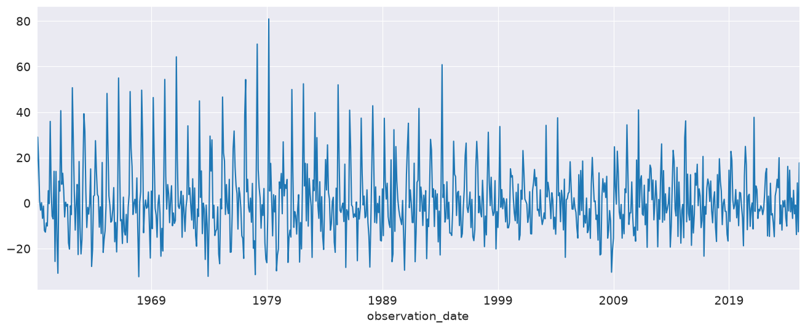
We can start with an AR(3). While this is not a good model for this data, it demonstrates the basic use of the API.
[4]:
mod = AutoReg(housing, 3, old_names=False)
res = mod.fit()
print(res.summary())
AutoReg Model Results
==============================================================================
Dep. Variable: HOUSTNSA No. Observations: 793
Model: AutoReg(3) Log Likelihood -3256.705
Method: Conditional MLE S.D. of innovations 14.932
Date: Tue, 30 Jun 2026 AIC 6523.410
Time: 15:50:05 BIC 6546.771
Sample: 05-01-1959 HQIC 6532.390
- 02-01-2025
===============================================================================
coef std err z P>|z| [0.025 0.975]
-------------------------------------------------------------------------------
const 1.0817 0.534 2.024 0.043 0.034 2.129
HOUSTNSA.L1 0.1781 0.035 5.104 0.000 0.110 0.246
HOUSTNSA.L2 0.0131 0.035 0.369 0.712 -0.056 0.083
HOUSTNSA.L3 -0.1983 0.035 -5.691 0.000 -0.267 -0.130
Roots
=============================================================================
Real Imaginary Modulus Frequency
-----------------------------------------------------------------------------
AR.1 0.9655 -1.3309j 1.6443 -0.1501
AR.2 0.9655 +1.3309j 1.6443 0.1501
AR.3 -1.8651 -0.0000j 1.8651 -0.5000
-----------------------------------------------------------------------------
AutoReg supports the same covariance estimators as OLS. Below, we use cov_type="HC0", which is White’s covariance estimator. While the parameter estimates are the same, all of the quantities that depend on the standard error change.
[5]:
res = mod.fit(cov_type="HC0")
print(res.summary())
AutoReg Model Results
==============================================================================
Dep. Variable: HOUSTNSA No. Observations: 793
Model: AutoReg(3) Log Likelihood -3256.705
Method: Conditional MLE S.D. of innovations 14.932
Date: Tue, 30 Jun 2026 AIC 6523.410
Time: 15:50:05 BIC 6546.771
Sample: 05-01-1959 HQIC 6532.390
- 02-01-2025
===============================================================================
coef std err z P>|z| [0.025 0.975]
-------------------------------------------------------------------------------
const 1.0817 0.560 1.932 0.053 -0.016 2.179
HOUSTNSA.L1 0.1781 0.034 5.275 0.000 0.112 0.244
HOUSTNSA.L2 0.0131 0.037 0.353 0.724 -0.060 0.086
HOUSTNSA.L3 -0.1983 0.034 -5.759 0.000 -0.266 -0.131
Roots
=============================================================================
Real Imaginary Modulus Frequency
-----------------------------------------------------------------------------
AR.1 0.9655 -1.3309j 1.6443 -0.1501
AR.2 0.9655 +1.3309j 1.6443 0.1501
AR.3 -1.8651 -0.0000j 1.8651 -0.5000
-----------------------------------------------------------------------------
[6]:
sel = ar_select_order(housing, 13, old_names=False)
sel.ar_lags
res = sel.model.fit()
print(res.summary())
AutoReg Model Results
==============================================================================
Dep. Variable: HOUSTNSA No. Observations: 793
Model: AutoReg(13) Log Likelihood -2939.564
Method: Conditional MLE S.D. of innovations 10.483
Date: Tue, 30 Jun 2026 AIC 5909.128
Time: 15:50:05 BIC 5979.017
Sample: 03-01-1960 HQIC 5936.008
- 02-01-2025
================================================================================
coef std err z P>|z| [0.025 0.975]
--------------------------------------------------------------------------------
const 1.4235 0.441 3.231 0.001 0.560 2.287
HOUSTNSA.L1 -0.2728 0.034 -7.983 0.000 -0.340 -0.206
HOUSTNSA.L2 -0.0799 0.031 -2.611 0.009 -0.140 -0.020
HOUSTNSA.L3 -0.0911 0.031 -2.986 0.003 -0.151 -0.031
HOUSTNSA.L4 -0.1700 0.030 -5.585 0.000 -0.230 -0.110
HOUSTNSA.L5 -0.0461 0.031 -1.494 0.135 -0.107 0.014
HOUSTNSA.L6 -0.0886 0.030 -2.917 0.004 -0.148 -0.029
HOUSTNSA.L7 -0.0731 0.030 -2.404 0.016 -0.133 -0.013
HOUSTNSA.L8 -0.1580 0.030 -5.205 0.000 -0.218 -0.099
HOUSTNSA.L9 -0.0908 0.031 -2.945 0.003 -0.151 -0.030
HOUSTNSA.L10 -0.1087 0.030 -3.577 0.000 -0.168 -0.049
HOUSTNSA.L11 0.1031 0.030 3.383 0.001 0.043 0.163
HOUSTNSA.L12 0.5023 0.031 16.435 0.000 0.442 0.562
HOUSTNSA.L13 0.2998 0.034 8.767 0.000 0.233 0.367
Roots
==============================================================================
Real Imaginary Modulus Frequency
------------------------------------------------------------------------------
AR.1 1.1031 -0.0000j 1.1031 -0.0000
AR.2 0.8752 -0.5033j 1.0096 -0.0831
AR.3 0.8752 +0.5033j 1.0096 0.0831
AR.4 0.5050 -0.8785j 1.0133 -0.1670
AR.5 0.5050 +0.8785j 1.0133 0.1670
AR.6 0.0131 -1.0593j 1.0593 -0.2480
AR.7 0.0131 +1.0593j 1.0593 0.2480
AR.8 -0.5279 -0.9390j 1.0772 -0.3315
AR.9 -0.5279 +0.9390j 1.0772 0.3315
AR.10 -0.9597 -0.5922j 1.1277 -0.4120
AR.11 -0.9597 +0.5922j 1.1277 0.4120
AR.12 -1.2951 -0.2595j 1.3208 -0.4685
AR.13 -1.2951 +0.2595j 1.3208 0.4685
------------------------------------------------------------------------------
plot_predict visualizes forecasts. Here we produce a large number of forecasts which show the string seasonality captured by the model.
[7]:
fig = res.plot_predict(720, 840)
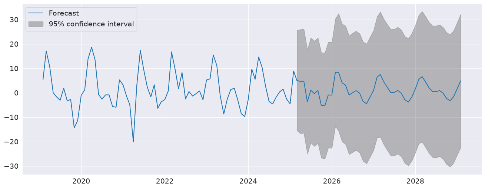
plot_diagnostics indicates that the model captures the key features in the data.
[8]:
fig = plt.figure(figsize=(16, 9))
fig = res.plot_diagnostics(fig=fig, lags=30)
Seasonal Dummies#
AutoReg supports seasonal dummies which are an alternative way to model seasonality. Including the dummies shortens the dynamics to only an AR(2).
[9]:
sel = ar_select_order(housing, 13, seasonal=True, old_names=False)
sel.ar_lags
res = sel.model.fit()
print(res.summary())
AutoReg Model Results
==============================================================================
Dep. Variable: HOUSTNSA No. Observations: 793
Model: Seas. AutoReg(1) Log Likelihood -2936.578
Method: Conditional MLE S.D. of innovations 9.864
Date: Tue, 30 Jun 2026 AIC 5901.155
Time: 15:50:09 BIC 5966.599
Sample: 03-01-1959 HQIC 5926.308
- 02-01-2025
===============================================================================
coef std err z P>|z| [0.025 0.975]
-------------------------------------------------------------------------------
const 3.4122 1.223 2.790 0.005 1.015 5.810
s(2,12) 28.8933 1.742 16.589 0.000 25.479 32.307
s(3,12) 16.9396 2.115 8.010 0.000 12.795 21.085
s(4,12) 3.6526 1.821 2.006 0.045 0.084 7.222
s(5,12) -1.9508 1.741 -1.120 0.263 -5.363 1.462
s(6,12) -6.8277 1.725 -3.958 0.000 -10.209 -3.446
s(7,12) -6.0107 1.717 -3.500 0.000 -9.376 -2.645
s(8,12) -7.8424 1.719 -4.562 0.000 -11.212 -4.473
s(9,12) -1.8018 1.717 -1.049 0.294 -5.167 1.564
s(10,12) -17.8929 1.733 -10.324 0.000 -21.290 -14.496
s(11,12) -20.7680 1.757 -11.819 0.000 -24.212 -17.324
s(12,12) -10.8565 1.749 -6.206 0.000 -14.285 -7.428
HOUSTNSA.L1 -0.2273 0.035 -6.560 0.000 -0.295 -0.159
Roots
=============================================================================
Real Imaginary Modulus Frequency
-----------------------------------------------------------------------------
AR.1 -4.4002 +0.0000j 4.4002 0.5000
-----------------------------------------------------------------------------
The seasonal dummies are obvious in the forecasts which has a non-trivial seasonal component in all periods 10 years in to the future.
[10]:
fig = res.plot_predict(720, 840)
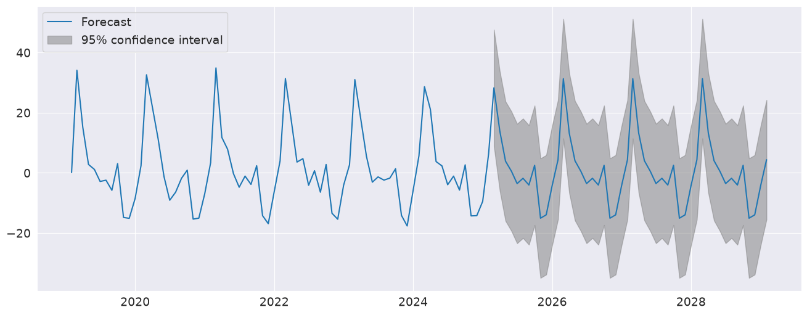
[11]:
fig = plt.figure(figsize=(16, 9))
fig = res.plot_diagnostics(lags=30, fig=fig)
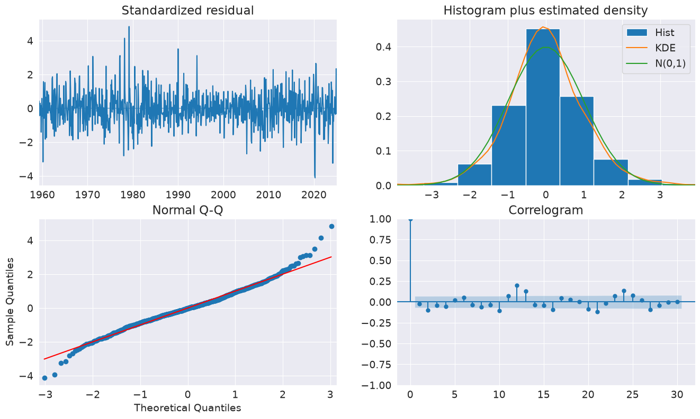
Seasonal Dynamics#
While AutoReg does not directly support Seasonal components since it uses OLS to estimate parameters, it is possible to capture seasonal dynamics using an over-parametrized Seasonal AR that does not impose the restrictions in the Seasonal AR.
[12]:
yoy_housing = housing_data.HOUSTNSA.pct_change(12).resample("MS").last().dropna()
_, ax = plt.subplots()
ax = yoy_housing.plot(ax=ax)
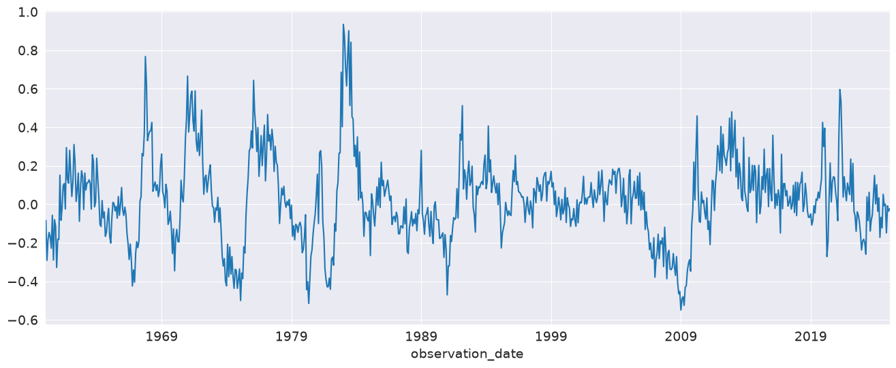
We start by selecting a model using the simple method that only chooses the maximum lag. All lower lags are automatically included. The maximum lag to check is set to 13 since this allows the model to next a Seasonal AR that has both a short-run AR(1) component and a Seasonal AR(1) component, so that
which becomes
when expanded. AutoReg does not enforce the structure, but can estimate the nesting model
We see that all 13 lags are selected.
[13]:
sel = ar_select_order(yoy_housing, 13, old_names=False)
sel.ar_lags
[13]:
[1, 2, 3, 4, 5, 6, 7, 8, 9, 10, 11, 12, 13]
It seems unlikely that all 13 lags are required. We can set glob=True to search all \(2^{13}\) models that include up to 13 lags.
Here we see that the first three are selected, as is the 7th, and finally the 12th and 13th are selected. This is superficially similar to the structure described above.
After fitting the model, we take a look at the diagnostic plots that indicate that this specification appears to be adequate to capture the dynamics in the data.
[14]:
sel = ar_select_order(yoy_housing, 13, glob=True, old_names=False)
sel.ar_lags
res = sel.model.fit()
print(res.summary())
AutoReg Model Results
==============================================================================
Dep. Variable: HOUSTNSA No. Observations: 782
Model: Restr. AutoReg(13) Log Likelihood 621.088
Method: Conditional MLE S.D. of innovations 0.108
Date: Tue, 30 Jun 2026 AIC -1228.177
Time: 15:50:20 BIC -1195.661
Sample: 02-01-1961 HQIC -1215.663
- 02-01-2025
================================================================================
coef std err z P>|z| [0.025 0.975]
--------------------------------------------------------------------------------
const 0.0039 0.004 0.984 0.325 -0.004 0.012
HOUSTNSA.L1 0.5995 0.034 17.831 0.000 0.534 0.665
HOUSTNSA.L2 0.2102 0.036 5.766 0.000 0.139 0.282
HOUSTNSA.L3 0.1261 0.034 3.764 0.000 0.060 0.192
HOUSTNSA.L12 -0.4142 0.032 -12.960 0.000 -0.477 -0.352
HOUSTNSA.L13 0.3357 0.032 10.563 0.000 0.273 0.398
Roots
==============================================================================
Real Imaginary Modulus Frequency
------------------------------------------------------------------------------
AR.1 -1.0236 -0.2724j 1.0593 -0.4586
AR.2 -1.0236 +0.2724j 1.0593 0.4586
AR.3 -0.7550 -0.7395j 1.0568 -0.3767
AR.4 -0.7550 +0.7395j 1.0568 0.3767
AR.5 -0.3008 -1.0220j 1.0653 -0.2956
AR.6 -0.3008 +1.0220j 1.0653 0.2956
AR.7 0.2520 -1.0582j 1.0878 -0.2128
AR.8 0.2520 +1.0582j 1.0878 0.2128
AR.9 0.7760 -0.7944j 1.1105 -0.1269
AR.10 0.7760 +0.7944j 1.1105 0.1269
AR.11 1.0958 -0.2296j 1.1196 -0.0329
AR.12 1.0958 +0.2296j 1.1196 0.0329
AR.13 1.1451 -0.0000j 1.1451 -0.0000
------------------------------------------------------------------------------
[15]:
fig = plt.figure(figsize=(16, 9))
fig = res.plot_diagnostics(fig=fig, lags=30)
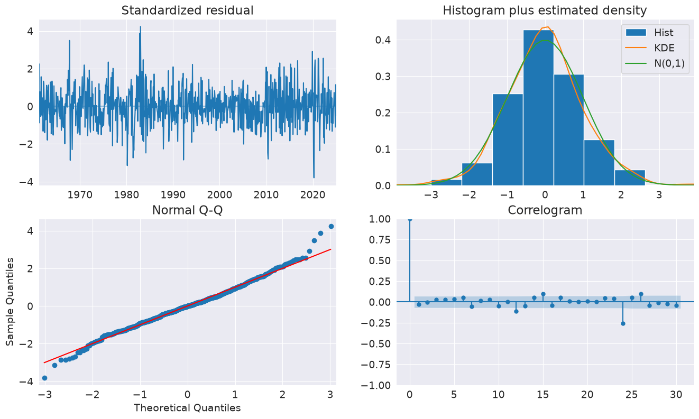
We can also include seasonal dummies. These are all insignificant since the model is using year-over-year changes.
[16]:
sel = ar_select_order(yoy_housing, 13, glob=True, seasonal=True, old_names=False)
sel.ar_lags
res = sel.model.fit()
print(res.summary())
AutoReg Model Results
====================================================================================
Dep. Variable: HOUSTNSA No. Observations: 782
Model: Restr. Seas. AutoReg(13) Log Likelihood 622.608
Method: Conditional MLE S.D. of innovations 0.108
Date: Tue, 30 Jun 2026 AIC -1209.215
Time: 15:51:57 BIC -1125.604
Sample: 02-01-1961 HQIC -1177.036
- 02-01-2025
================================================================================
coef std err z P>|z| [0.025 0.975]
--------------------------------------------------------------------------------
const 0.0120 0.013 0.889 0.374 -0.014 0.038
s(2,12) -0.0066 0.019 -0.349 0.727 -0.044 0.031
s(3,12) -0.0101 0.019 -0.531 0.595 -0.047 0.027
s(4,12) -0.0121 0.019 -0.638 0.524 -0.049 0.025
s(5,12) -0.0178 0.019 -0.936 0.349 -0.055 0.020
s(6,12) -0.0179 0.019 -0.940 0.347 -0.055 0.019
s(7,12) -0.0170 0.019 -0.892 0.372 -0.054 0.020
s(8,12) -0.0070 0.019 -0.369 0.712 -0.044 0.030
s(9,12) -0.0068 0.019 -0.357 0.721 -0.044 0.031
s(10,12) -0.0023 0.019 -0.119 0.905 -0.040 0.035
s(11,12) -0.0032 0.019 -0.169 0.866 -0.041 0.034
s(12,12) 0.0035 0.019 0.184 0.854 -0.034 0.041
HOUSTNSA.L1 0.5977 0.034 17.794 0.000 0.532 0.664
HOUSTNSA.L2 0.2104 0.036 5.784 0.000 0.139 0.282
HOUSTNSA.L3 0.1283 0.033 3.832 0.000 0.063 0.194
HOUSTNSA.L12 -0.4159 0.032 -13.032 0.000 -0.478 -0.353
HOUSTNSA.L13 0.3366 0.032 10.607 0.000 0.274 0.399
Roots
==============================================================================
Real Imaginary Modulus Frequency
------------------------------------------------------------------------------
AR.1 -1.0233 -0.2724j 1.0590 -0.4586
AR.2 -1.0233 +0.2724j 1.0590 0.4586
AR.3 -0.7546 -0.7392j 1.0564 -0.3766
AR.4 -0.7546 +0.7392j 1.0564 0.3766
AR.5 -0.3007 -1.0214j 1.0648 -0.2956
AR.6 -0.3007 +1.0214j 1.0648 0.2956
AR.7 0.2517 -1.0580j 1.0875 -0.2128
AR.8 0.2517 +1.0580j 1.0875 0.2128
AR.9 0.7759 -0.7944j 1.1104 -0.1269
AR.10 0.7759 +0.7944j 1.1104 0.1269
AR.11 1.0957 -0.2285j 1.1193 -0.0327
AR.12 1.0957 +0.2285j 1.1193 0.0327
AR.13 1.1463 -0.0000j 1.1463 -0.0000
------------------------------------------------------------------------------
Industrial Production#
We will use the industrial production index data to examine forecasting.
[17]:
indpro_loc = "https://raw.githubusercontent.com/statsmodels/smdatasets/refs/heads/main/data/autoregressions/INDPRO.csv"
indpro_data = pd.read_csv(
indpro_loc,
index_col=0,
parse_dates=True,
)
ind_prod = indpro_data.INDPRO.pct_change(12).dropna().asfreq("MS")
_, ax = plt.subplots(figsize=(16, 9))
_ = ind_prod.plot(ax=ax)
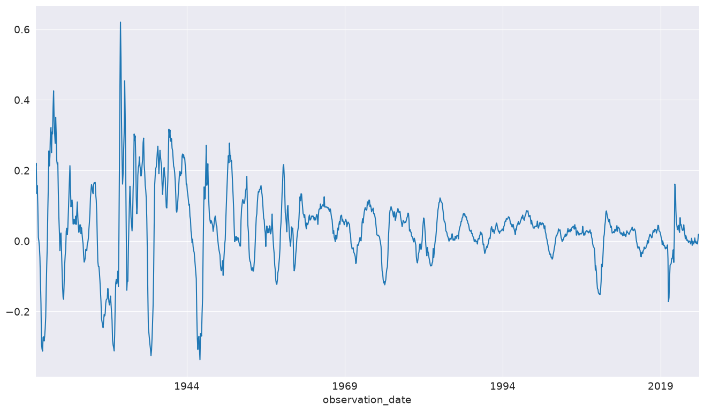
We will start by selecting a model using up to 12 lags. An AR(13) minimizes the BIC criteria even though many coefficients are insignificant.
[18]:
sel = ar_select_order(ind_prod, 13, "bic", old_names=False)
res = sel.model.fit()
print(res.summary())
AutoReg Model Results
==============================================================================
Dep. Variable: INDPRO No. Observations: 1262
Model: AutoReg(13) Log Likelihood 2994.351
Method: Conditional MLE S.D. of innovations 0.022
Date: Tue, 30 Jun 2026 AIC -5958.703
Time: 15:51:57 BIC -5881.751
Sample: 02-01-1921 HQIC -5929.773
- 02-01-2025
==============================================================================
coef std err z P>|z| [0.025 0.975]
------------------------------------------------------------------------------
const 0.0022 0.001 3.216 0.001 0.001 0.004
INDPRO.L1 1.3715 0.026 52.595 0.000 1.320 1.423
INDPRO.L2 -0.4501 0.045 -9.965 0.000 -0.539 -0.362
INDPRO.L3 0.0794 0.047 1.692 0.091 -0.013 0.171
INDPRO.L4 -0.0753 0.047 -1.604 0.109 -0.167 0.017
INDPRO.L5 0.0873 0.047 1.856 0.063 -0.005 0.179
INDPRO.L6 -0.1084 0.047 -2.303 0.021 -0.201 -0.016
INDPRO.L7 0.1242 0.047 2.645 0.008 0.032 0.216
INDPRO.L8 -0.0077 0.047 -0.164 0.870 -0.100 0.084
INDPRO.L9 -0.0078 0.047 -0.166 0.868 -0.099 0.084
INDPRO.L10 -0.0166 0.046 -0.359 0.720 -0.107 0.074
INDPRO.L11 -0.0113 0.046 -0.245 0.807 -0.102 0.079
INDPRO.L12 -0.4134 0.044 -9.316 0.000 -0.500 -0.326
INDPRO.L13 0.3692 0.026 14.406 0.000 0.319 0.419
Roots
==============================================================================
Real Imaginary Modulus Frequency
------------------------------------------------------------------------------
AR.1 -1.0764 -0.3227j 1.1237 -0.4536
AR.2 -1.0764 +0.3227j 1.1237 0.4536
AR.3 -0.7663 -0.7879j 1.0991 -0.3728
AR.4 -0.7663 +0.7879j 1.0991 0.3728
AR.5 -0.2371 -1.0693j 1.0953 -0.2847
AR.6 -0.2371 +1.0693j 1.0953 0.2847
AR.7 0.3068 -1.0301j 1.0748 -0.2039
AR.8 0.3068 +1.0301j 1.0748 0.2039
AR.9 0.7629 -0.6971j 1.0335 -0.1178
AR.10 0.7629 +0.6971j 1.0335 0.1178
AR.11 1.0271 -0.2230j 1.0510 -0.0340
AR.12 1.0271 +0.2230j 1.0510 0.0340
AR.13 1.0859 -0.0000j 1.0859 -0.0000
------------------------------------------------------------------------------
We can also use a global search which allows longer lags to enter if needed without requiring the shorter lags. Here we see many lags dropped. The model indicates there may be some seasonality in the data.
[19]:
sel = ar_select_order(ind_prod, 13, "bic", glob=True, old_names=False)
sel.ar_lags
res_glob = sel.model.fit()
print(res.summary())
AutoReg Model Results
==============================================================================
Dep. Variable: INDPRO No. Observations: 1262
Model: AutoReg(13) Log Likelihood 2994.351
Method: Conditional MLE S.D. of innovations 0.022
Date: Tue, 30 Jun 2026 AIC -5958.703
Time: 15:52:28 BIC -5881.751
Sample: 02-01-1921 HQIC -5929.773
- 02-01-2025
==============================================================================
coef std err z P>|z| [0.025 0.975]
------------------------------------------------------------------------------
const 0.0022 0.001 3.216 0.001 0.001 0.004
INDPRO.L1 1.3715 0.026 52.595 0.000 1.320 1.423
INDPRO.L2 -0.4501 0.045 -9.965 0.000 -0.539 -0.362
INDPRO.L3 0.0794 0.047 1.692 0.091 -0.013 0.171
INDPRO.L4 -0.0753 0.047 -1.604 0.109 -0.167 0.017
INDPRO.L5 0.0873 0.047 1.856 0.063 -0.005 0.179
INDPRO.L6 -0.1084 0.047 -2.303 0.021 -0.201 -0.016
INDPRO.L7 0.1242 0.047 2.645 0.008 0.032 0.216
INDPRO.L8 -0.0077 0.047 -0.164 0.870 -0.100 0.084
INDPRO.L9 -0.0078 0.047 -0.166 0.868 -0.099 0.084
INDPRO.L10 -0.0166 0.046 -0.359 0.720 -0.107 0.074
INDPRO.L11 -0.0113 0.046 -0.245 0.807 -0.102 0.079
INDPRO.L12 -0.4134 0.044 -9.316 0.000 -0.500 -0.326
INDPRO.L13 0.3692 0.026 14.406 0.000 0.319 0.419
Roots
==============================================================================
Real Imaginary Modulus Frequency
------------------------------------------------------------------------------
AR.1 -1.0764 -0.3227j 1.1237 -0.4536
AR.2 -1.0764 +0.3227j 1.1237 0.4536
AR.3 -0.7663 -0.7879j 1.0991 -0.3728
AR.4 -0.7663 +0.7879j 1.0991 0.3728
AR.5 -0.2371 -1.0693j 1.0953 -0.2847
AR.6 -0.2371 +1.0693j 1.0953 0.2847
AR.7 0.3068 -1.0301j 1.0748 -0.2039
AR.8 0.3068 +1.0301j 1.0748 0.2039
AR.9 0.7629 -0.6971j 1.0335 -0.1178
AR.10 0.7629 +0.6971j 1.0335 0.1178
AR.11 1.0271 -0.2230j 1.0510 -0.0340
AR.12 1.0271 +0.2230j 1.0510 0.0340
AR.13 1.0859 -0.0000j 1.0859 -0.0000
------------------------------------------------------------------------------
plot_predict can be used to produce forecast plots along with confidence intervals. Here we produce forecasts starting at the last observation and continuing for 18 months.
[20]:
ind_prod.shape
[20]:
(1262,)
[21]:
fig = res_glob.plot_predict(start=714, end=732)
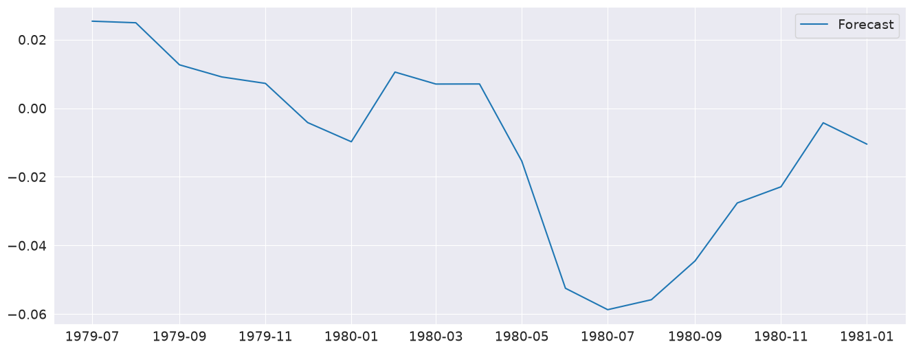
The forecasts from the full model and the restricted model are very similar. I also include an AR(5) which has very different dynamics
[22]:
res_ar5 = AutoReg(ind_prod, 5, old_names=False).fit()
predictions = pd.DataFrame(
{
"AR(5)": res_ar5.predict(start=714, end=726),
"AR(13)": res.predict(start=714, end=726),
"Restr. AR(13)": res_glob.predict(start=714, end=726),
}
)
_, ax = plt.subplots()
ax = predictions.plot(ax=ax)
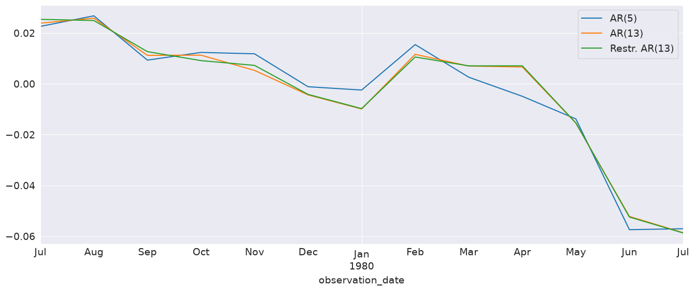
The diagnostics indicate the model captures most of the the dynamics in the data. The ACF shows a pattern at the seasonal frequency and so a more complete seasonal model (SARIMAX) may be needed.
[23]:
fig = plt.figure(figsize=(16, 9))
fig = res_glob.plot_diagnostics(fig=fig, lags=30)
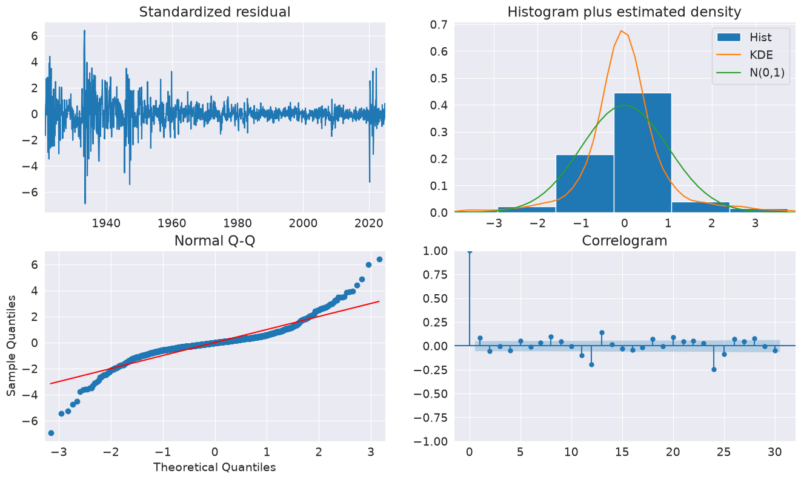
Forecasting#
Forecasts are produced using the predict method from a results instance. The default produces static forecasts which are one-step forecasts. Producing multi-step forecasts requires using dynamic=True.
In this next cell, we produce 12-step-heard forecasts for the final 24 periods in the sample. This requires a loop.
Note: These are technically in-sample since the data we are forecasting was used to estimate parameters. Producing OOS forecasts requires two models. The first must exclude the OOS period. The second uses the predict method from the full-sample model with the parameters from the shorter sample model that excluded the OOS period.
[24]:
import numpy as np
start = ind_prod.index[-24]
forecast_index = pd.date_range(start, freq=ind_prod.index.freq, periods=36)
cols = ["-".join(str(val) for val in (idx.year, idx.month)) for idx in forecast_index]
forecasts = pd.DataFrame(index=forecast_index, columns=cols)
for i in range(1, 24):
fcast = res_glob.predict(
start=forecast_index[i], end=forecast_index[i + 12], dynamic=True
)
forecasts.loc[fcast.index, cols[i]] = fcast
_, ax = plt.subplots(figsize=(16, 10))
ind_prod.iloc[-24:].plot(ax=ax, color="black", linestyle="--")
ax = forecasts.plot(ax=ax)
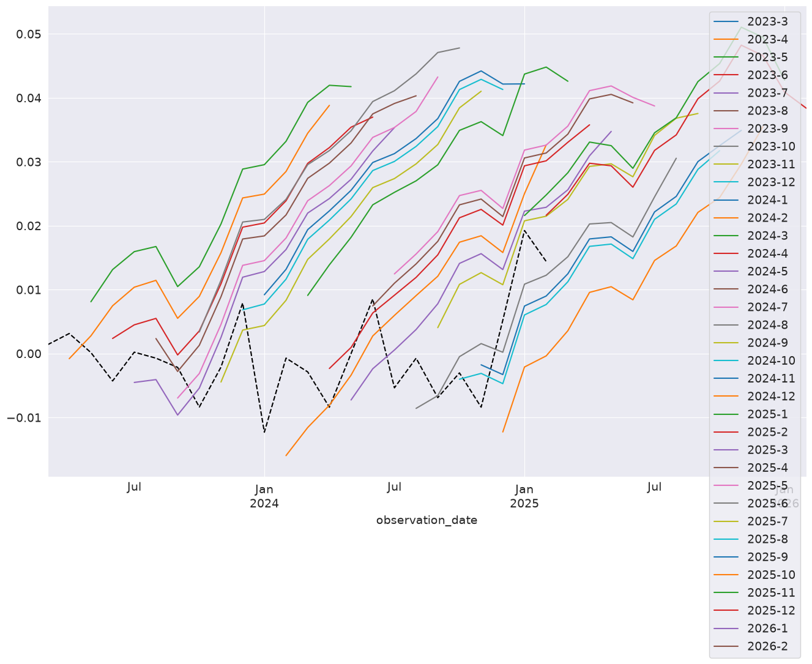
Comparing to SARIMAX#
SARIMAX is an implementation of a Seasonal Autoregressive Integrated Moving Average with eXogenous regressors model. It supports:
Specification of seasonal and nonseasonal AR and MA components
Inclusion of Exogenous variables
Full maximum-likelihood estimation using the Kalman Filter
This model is more feature rich than AutoReg. Unlike SARIMAX, AutoReg estimates parameters using OLS. This is faster and the problem is globally convex, and so there are no issues with local minima. The closed-form estimator and its performance are the key advantages of AutoReg over SARIMAX when comparing AR(P) models. AutoReg also support seasonal dummies, which can be used with SARIMAX if the user includes them as exogenous regressors.
[25]:
from statsmodels.tsa.api import SARIMAX
sarimax_mod = SARIMAX(ind_prod, order=((1, 2, 7, 12, 13), 0, 0), trend="c")
sarimax_res = sarimax_mod.fit()
print(sarimax_res.summary())
SARIMAX Results
============================================================================================
Dep. Variable: INDPRO No. Observations: 1262
Model: SARIMAX([1, 2, 7, 12, 13], 0, 0) Log Likelihood 2994.915
Date: Tue, 30 Jun 2026 AIC -5975.830
Time: 15:52:48 BIC -5939.847
Sample: 01-01-1920 HQIC -5962.309
- 02-01-2025
Covariance Type: opg
==============================================================================
coef std err z P>|z| [0.025 0.975]
------------------------------------------------------------------------------
intercept 0.0020 0.001 2.789 0.005 0.001 0.003
ar.L1 1.3548 0.010 137.051 0.000 1.335 1.374
ar.L2 -0.3914 0.011 -34.693 0.000 -0.414 -0.369
ar.L7 0.0435 0.006 7.876 0.000 0.033 0.054
ar.L12 -0.4615 0.014 -33.795 0.000 -0.488 -0.435
ar.L13 0.3970 0.013 30.229 0.000 0.371 0.423
sigma2 0.0005 9.64e-06 52.480 0.000 0.000 0.001
===================================================================================
Ljung-Box (L1) (Q): 7.87 Jarque-Bera (JB): 3275.97
Prob(Q): 0.01 Prob(JB): 0.00
Heteroskedasticity (H): 0.14 Skew: 0.04
Prob(H) (two-sided): 0.00 Kurtosis: 10.89
===================================================================================
Warnings:
[1] Covariance matrix calculated using the outer product of gradients (complex-step).
[26]:
sarimax_params = sarimax_res.params.iloc[:-1].copy()
sarimax_params.index = res_glob.params.index
params = pd.concat([res_glob.params, sarimax_params], axis=1, sort=False)
params.columns = ["AutoReg", "SARIMAX"]
params
[26]:
| AutoReg | SARIMAX | |
|---|---|---|
| const | 0.002252 | 0.001954 |
| INDPRO.L1 | 1.355149 | 1.354845 |
| INDPRO.L2 | -0.396530 | -0.391420 |
| INDPRO.L7 | 0.048080 | 0.043527 |
| INDPRO.L12 | -0.447984 | -0.461550 |
| INDPRO.L13 | 0.381658 | 0.396978 |
Custom Deterministic Processes#
The deterministic parameter allows a custom DeterministicProcess to be used. This allows for more complex deterministic terms to be constructed, for example one that includes seasonal components with two periods, or, as the next example shows, one that uses a Fourier series rather than seasonal dummies.
[27]:
from statsmodels.tsa.deterministic import DeterministicProcess
dp = DeterministicProcess(housing.index, constant=True, period=12, fourier=2)
mod = AutoReg(housing, 2, trend="n", seasonal=False, deterministic=dp)
res = mod.fit()
print(res.summary())
AutoReg Model Results
==============================================================================
Dep. Variable: HOUSTNSA No. Observations: 793
Model: AutoReg(2) Log Likelihood -2992.123
Method: Conditional MLE S.D. of innovations 10.631
Date: Tue, 30 Jun 2026 AIC 6000.246
Time: 15:52:48 BIC 6037.633
Sample: 04-01-1959 HQIC 6014.616
- 02-01-2025
===============================================================================
coef std err z P>|z| [0.025 0.975]
-------------------------------------------------------------------------------
const 1.6409 0.383 4.282 0.000 0.890 2.392
sin(1,12) 15.0006 0.804 18.648 0.000 13.424 16.577
cos(1,12) 4.9139 0.571 8.613 0.000 3.796 6.032
sin(2,12) 11.6808 0.597 19.573 0.000 10.511 12.850
cos(2,12) 0.2304 0.706 0.326 0.744 -1.153 1.614
HOUSTNSA.L1 -0.3350 0.035 -9.517 0.000 -0.404 -0.266
HOUSTNSA.L2 -0.1397 0.035 -3.969 0.000 -0.209 -0.071
Roots
=============================================================================
Real Imaginary Modulus Frequency
-----------------------------------------------------------------------------
AR.1 -1.1989 -2.3915j 2.6752 -0.3240
AR.2 -1.1989 +2.3915j 2.6752 0.3240
-----------------------------------------------------------------------------
[28]:
fig = res.plot_predict(720, 840)
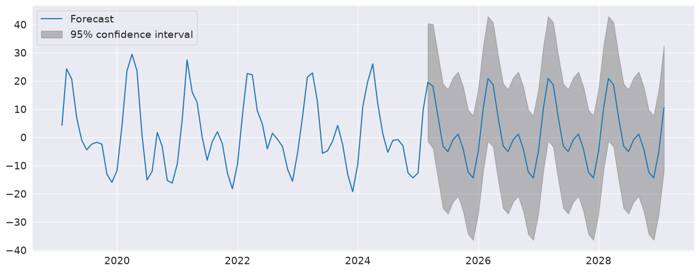